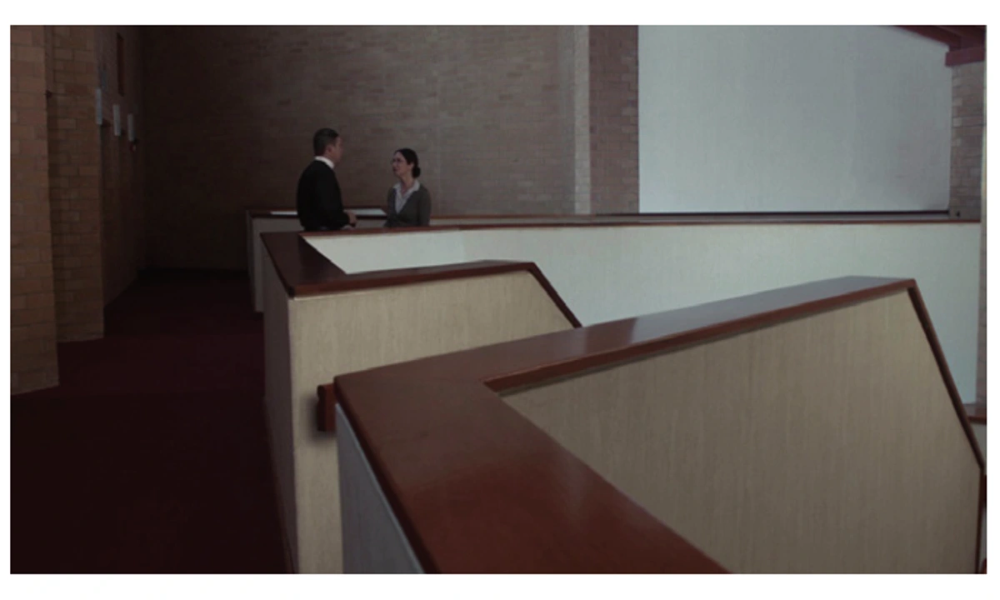
先安排画面里的形状。演员、物件、明暗和建筑，都能成为这些形状。
Composition is the arrangement of all shapes within an image. Shapes can be created with actors, objects, light and shadow or architectural structures.
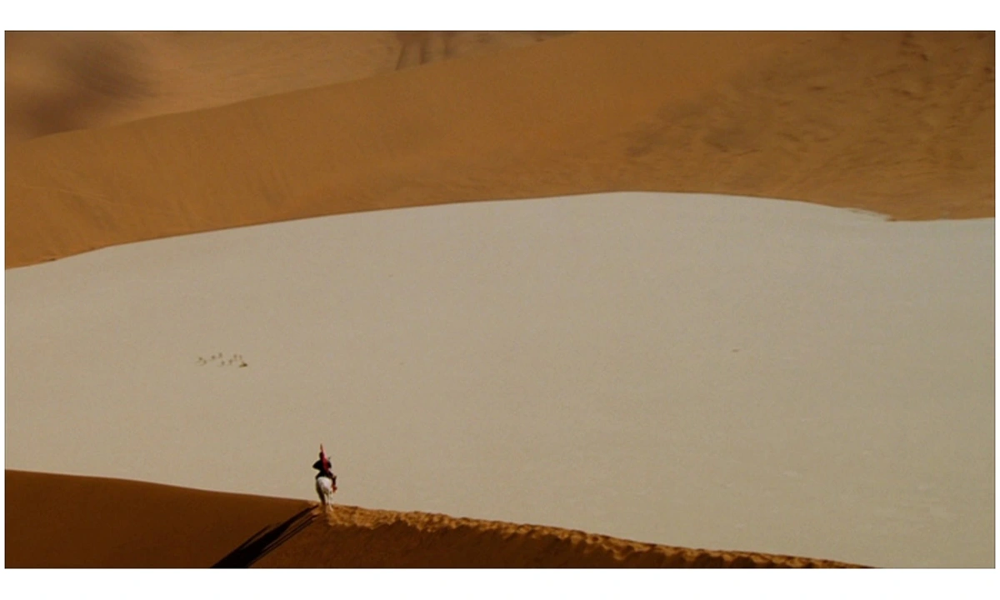

先安排画面里的形状。演员、物件、明暗和建筑，都能成为这些形状。
Composition is the arrangement of all shapes within an image. Shapes can be created with actors, objects, light and shadow or architectural structures.
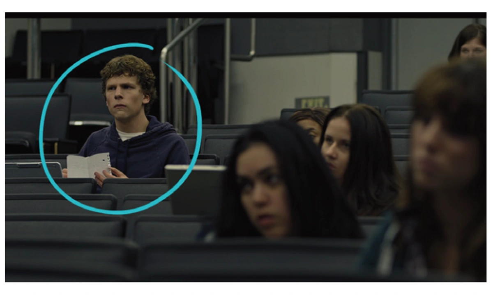
先决定观众第一眼该看哪里，再让镜头里的各种选择把注意力带向那里。注意力中心就是画面最先吸引目光的元素。
The focal point is the initial element your eye is drawn to in a composition. All cinematographic choices are used to guide your viewer’s attention to this part of your image.
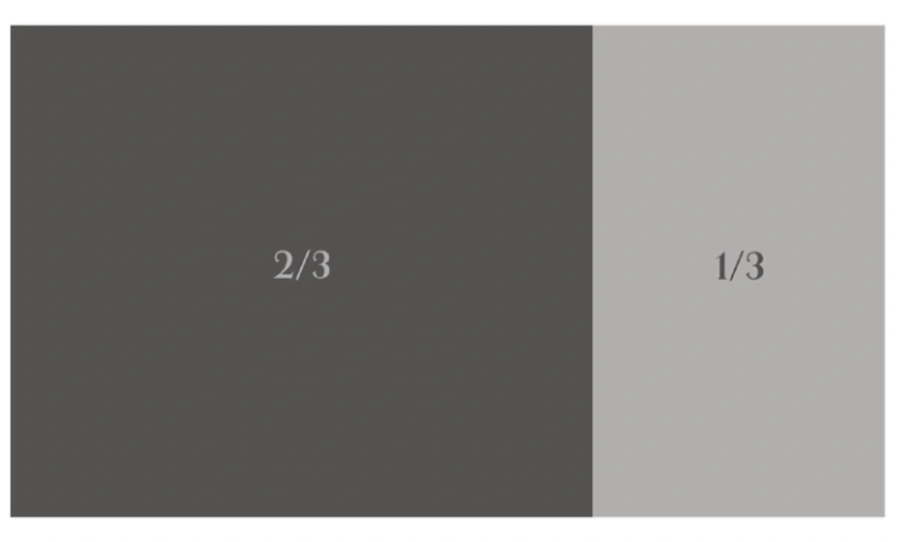
想清楚画面是大面积暗、带一点亮，还是大面积亮、带一点暗。明暗比例衡量画面里亮部和暗部的分量。讲义用三分法说明：不均等的明暗比例能吸引目光，把观众带向注意力中心。
Ratio is the measurement of light and dark that comprises an image. The rule of thirds is founded on the idea that uneven ratios of light and shadow engage the viewer’s eye and draw attention to your focal point. Ask yourself: “Am I creating an image that is mostly dark with a bit of light in it, or an image that is mostly light with a bit of dark in it?”
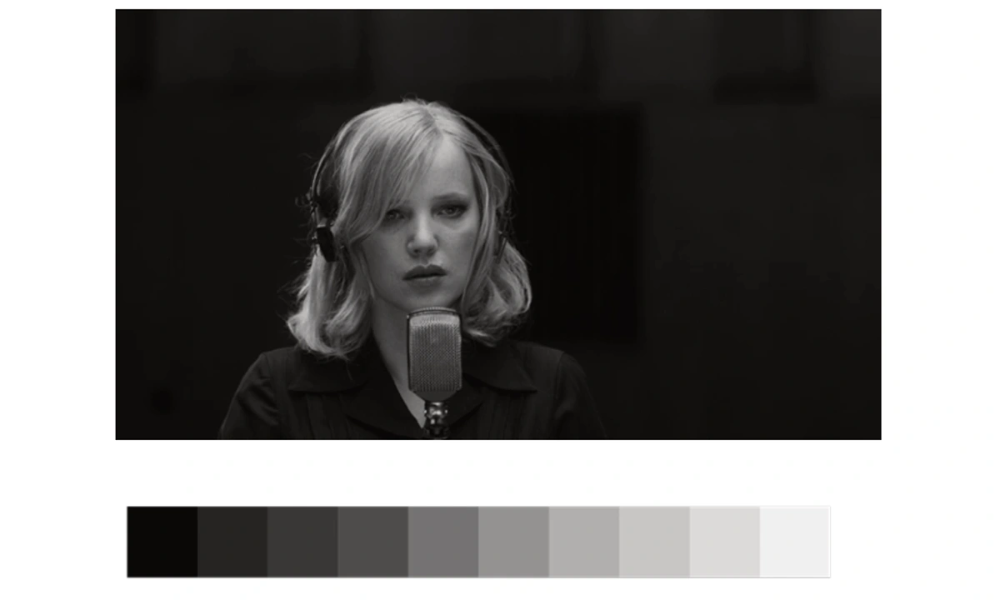
想让人物或物件看得清，就把亮的形状放在暗的背景前，或反过来。这种差异叫对比。明度是每个元素有多亮或多暗；导演要留意画面中各部分的明暗关系。可以先用黑白画面检查整体明度结构。
Value is how light or dark any given element is. Visual clarity occurs when you place a light shape in front of a dark one or a dark shape in front of a light one. This is called contrast. To direct the viewer’s eye, we must be concious of the light and dark elements of our picture. You can establish a proper value structure by first composing your image in black and white.
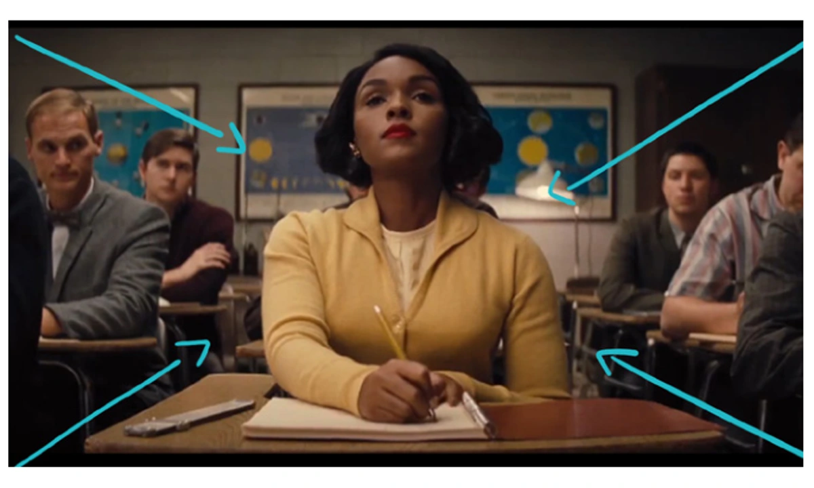
用近大远小让观众感到空间的纵深与距离。物体随距离增加而按规律缩小，也就形成了可以用来引导视线的斜线。
Perspective is the illusion that objects that are further away from us are smaller. This is our eye’s way of communicating depth and distance. Because objects grow smaller at consistant rate, they create diagonal lines that we can use to our advantage.
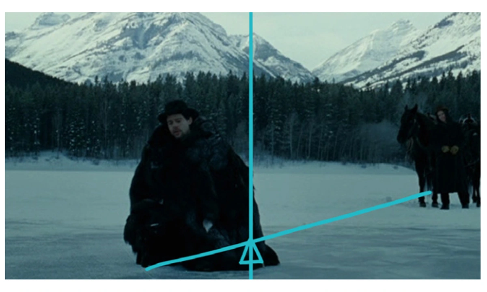
平衡说的是每个元素在视觉上有多重。可以把画面中线想成天平支点：重的东西靠近支点，轻的东西离支点远一点，来调整画面的平衡感。
Balance is how much visual weight one element of the image pulls. A feeling of balance within a composition can be established using the scale method. Start by drawing a line down the center of the image as if it were the fulcrum of a scale. Balance can be achieved by placing heavy objects closer to the fulcrum, and lighter objects further from it.
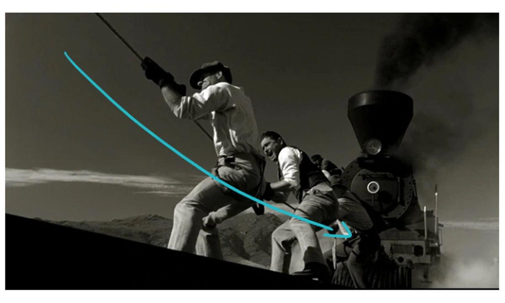
用画面里的元素制造运动感，让观众的眼睛顺着熟悉的形状或图案走。斜线、常见形态、字母形状等，都能形成方向引力。
Directional force is all elements of a composition creating a sense of movement. These forces can direct the viewer with familiar shapes or patterns the eye will follow. Directional force can be expressed with diagonal lines, common forms, letter shapes, and more.
把不重要的信息处理得失焦、低对比或不那么抢眼，给眼睛留出休息区。这样既能让观众离开无关细节，也能避免画面过度复杂、让人看不过来。
Elements in your image that are out-of-focus, low contrast, or low interest are called visual rests. Use them to guide your viewer’s eye away from unnecessary information and to prevent over-complicating or overwhelming your image.
通过电视或电脑显示器的饱和度设置，把你喜欢的一部彩色电影调成黑白来观看。观察导演怎样用亮与暗的形状组织画面；记下发现、截图，再把喜欢的画面概括成简单的大形状草图。
Set your television or computer to black & white using your monitor’s saturation settings. Then play your favorite color film in black & white. Note how the director uses light and dark shapes to compose their imagery. Write down what you learn, take screenshots, and draw crude sketches of the major shapes within your favorite images.
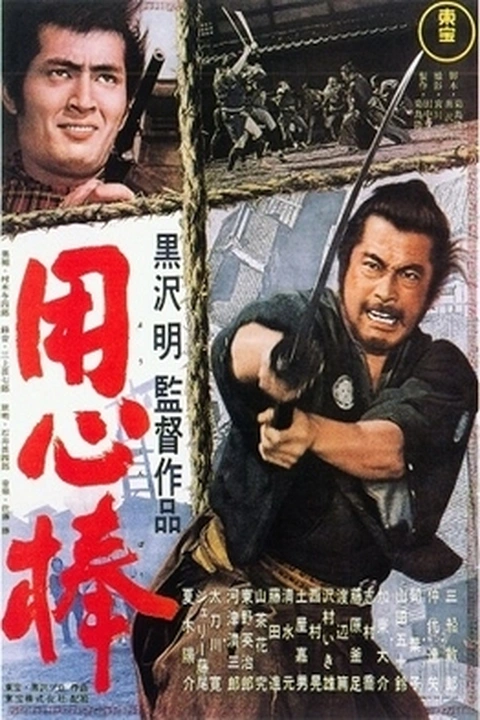
导演：Akira KurosawaDirector: Akira Kurosawa
摄影：Kazuo MiyagawaCinematography: Kazuo Miyagawa
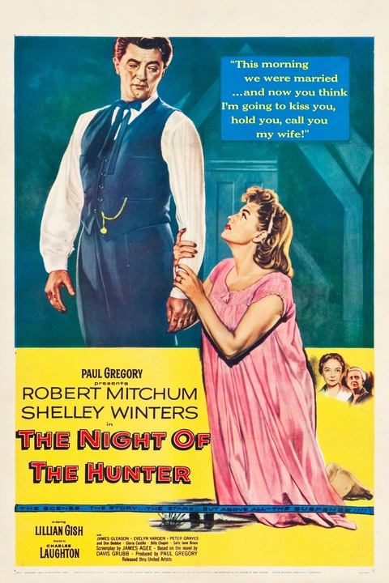
导演：Charles LaughtonDirector: Charles Laughton
摄影：Stanley CortezCinematography: Stanley Cortez
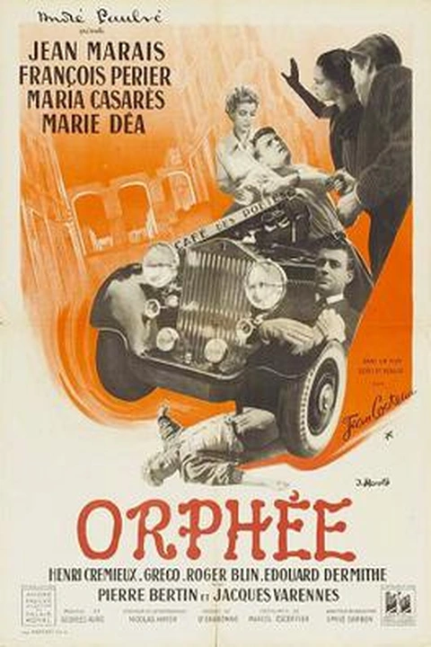
导演：Jean CocteauDirector: Jean Cocteau
摄影：Nicolas HayerCinematography: Nicolas Hayer
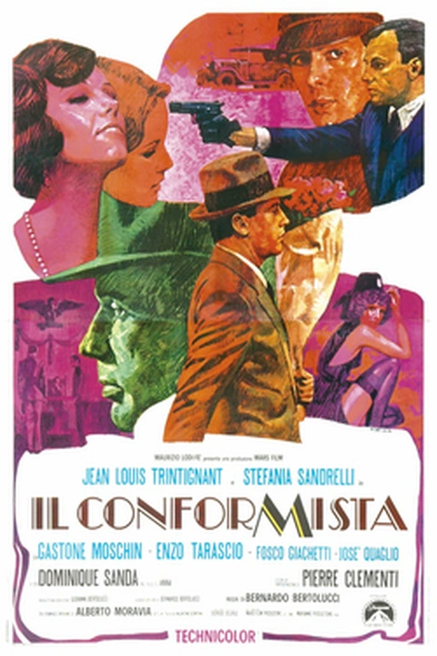
导演：Bernardo BertolucciDirector: Bernardo Bertolucci
摄影：Vittorio StoraroCinematography: Vittorio Storaro
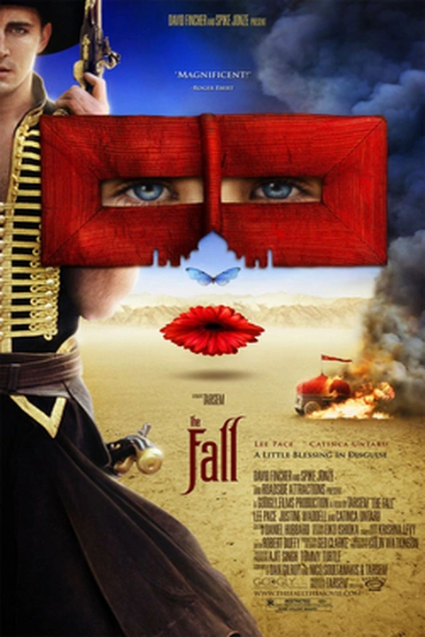
导演：Tarsem SinghDirector: Tarsem Singh
摄影：Colin WatkinsonCinematography: Colin Watkinson
导演：Barry JenkinsDirector: Barry Jenkins
摄影：James LaxtonCinematography: James Laxton
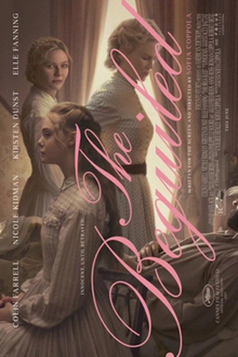
导演：Sofia CoppolaDirector: Sofia Coppola
摄影：Philippe Le SourdCinematography: Philippe Le Sourd
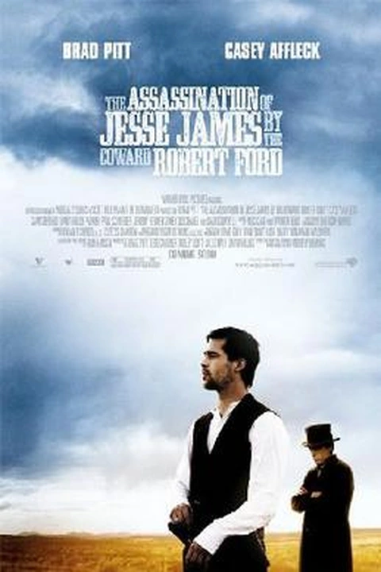
导演：Andrew DominikDirector: Andrew Dominik
摄影：Roger DeakinsCinematography: Roger Deakins
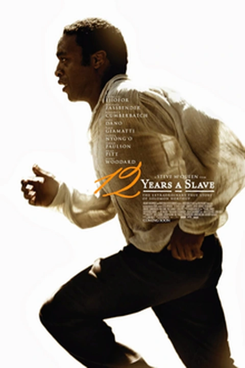
导演：Steve McQueenDirector: Steve McQueen
摄影：Sean BobbittCinematography: Sean Bobbitt
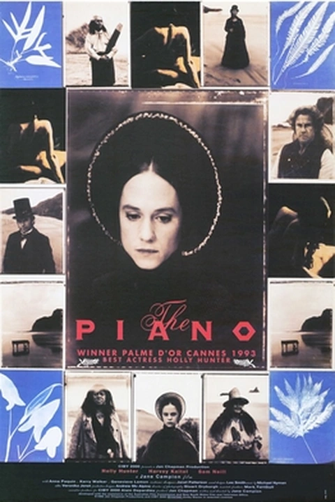
导演：Jane CampionDirector: Jane Campion
摄影：Stuart DryburghCinematography: Stuart Dryburgh
Steven D. Katz：《Film Directing Shot by Shot》；David Mamet：《On Directing Film》。
Film Directing Shot by Shot — Steven D. Katz.
On Directing Film — David Mamet.
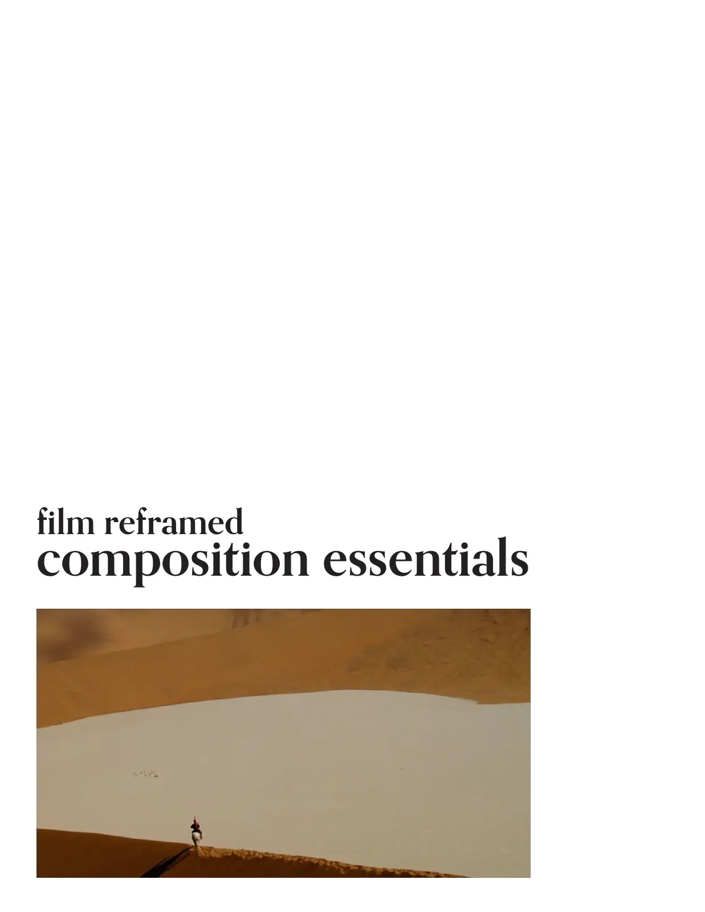
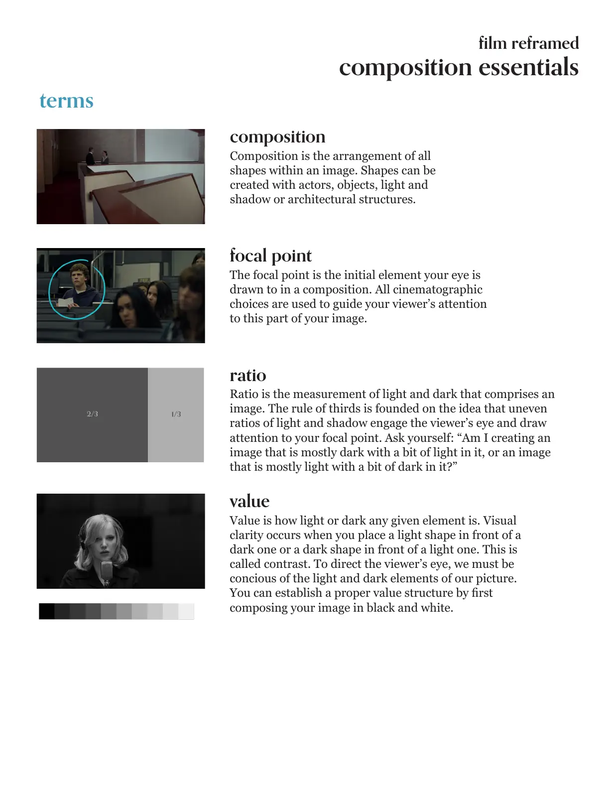
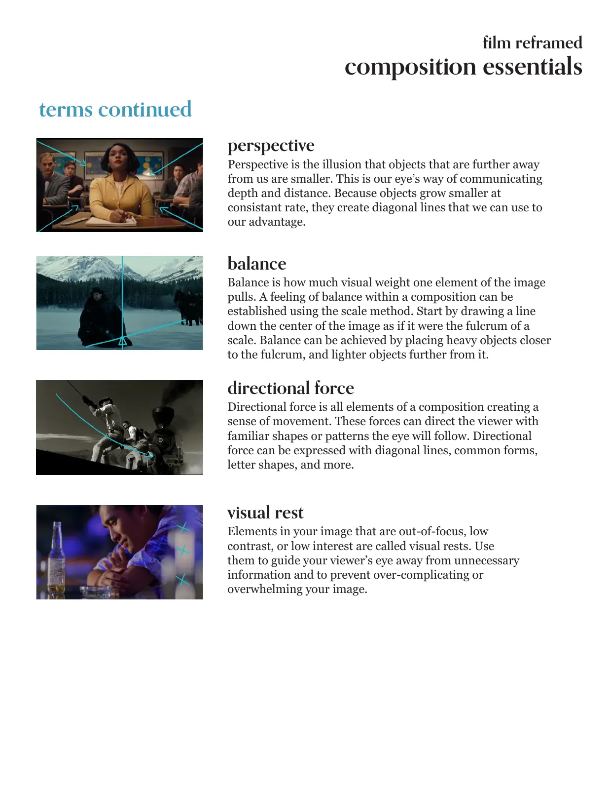
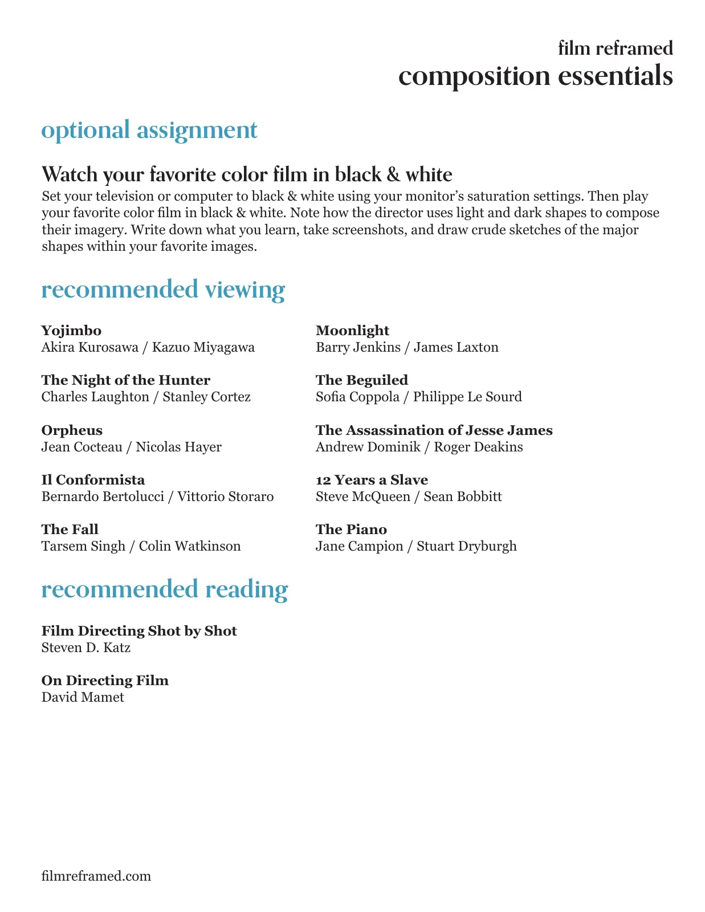